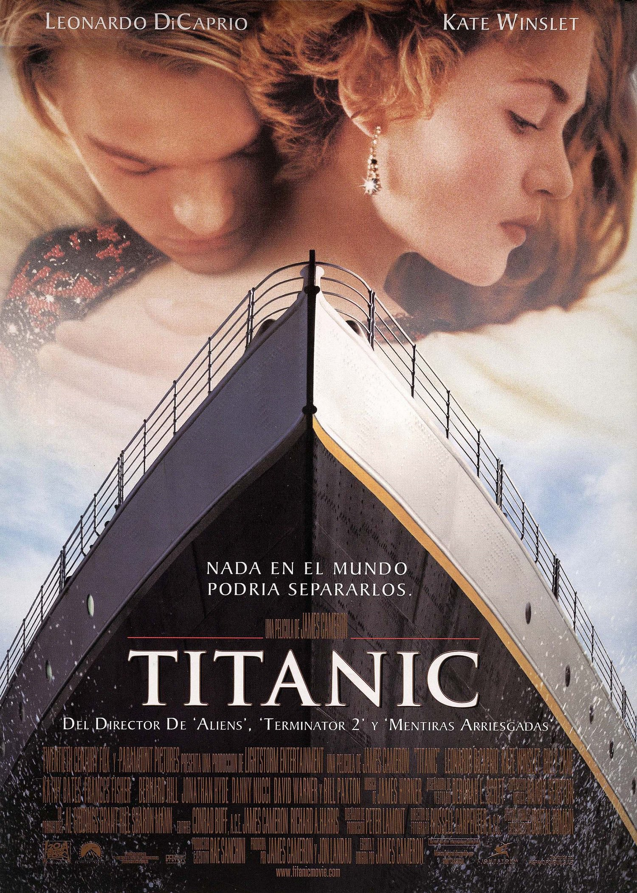
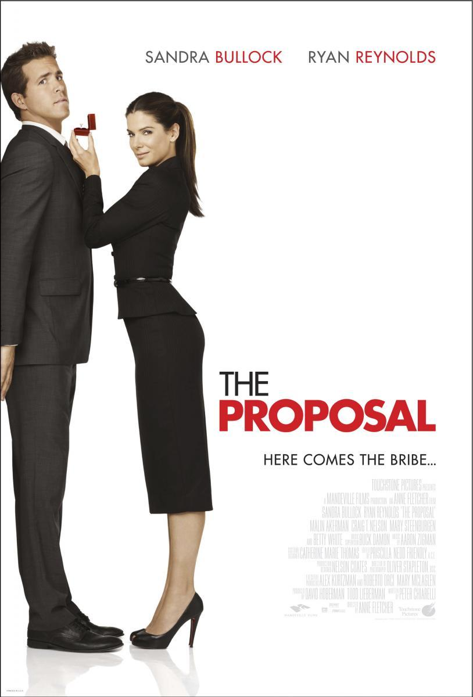

Una joven de la alta sociedad abandona a su arrogante pretendiente por un artista humilde en el trasatlántico que se hundió durante su viaje inaugural.
La vida de Louisa Clark, una chica alegre y alocada, que va empalmando un trabajo con otro para ayudar a su familia a subsistir, cambia por completo cuando comienza a trabajar como cuidadora de un joven millonario, quien quedó paralítico tras un accidente. Poco a poco, se va estableciendo entre ellos una conexión cada vez más íntima.
El funeral de un amigo cercano reúne a dos enamorados de la escuela secundaria, quienes descubren que se aman después de 20 años de estar separados.
Margaret, una famosa e influyente editora de Nueva York, está a punto de ser deportada a Canadá. Para evitarlo, declara que está comprometida con su ayudante Andrew. Él está dispuesto a participar en la farsa, pero imponiendo ciertas condiciones.
Después de que un accidente automovilístico la deja entre la vida y la muerte, una adolescente enfrenta una decisión que determinará su destino final.